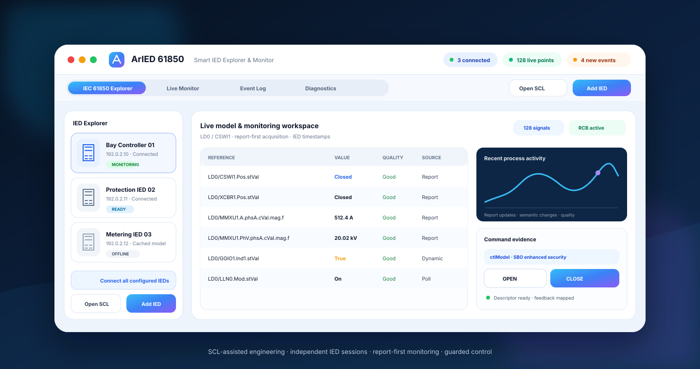

MMS discovery and monitoring
Discover Logical Devices, Logical Nodes, Data Objects, Data Attributes, values, quality, timestamps, DataSets, RCBs, and live type information.
ARSAS brings MMS, reporting, GOOSE, fault-record file transfer, Sampled Values, SCL workflows, diagnostics, sequence of events, and control validation into one focused engineering application.

Start from an IP address or SCL project, verify what the IED actually exposes, choose the required signals, and keep protocol evidence attached to the correct device session.
Discover Logical Devices, Logical Nodes, Data Objects, Data Attributes, values, quality, timestamps, DataSets, RCBs, and live type information.
Use proven report coverage first, add dynamic plans where supported, and poll only points that remain uncovered or unverified.
Inspect APPID, VLAN, MAC, `goCBRef`, DataSet, `stNum`, `sqNum`, TAL, ordered `allData`, and model-binding evidence.
Browse the MMS file service and retrieve disturbance or COMTRADE-related records through the selected IED context.
Open per-IED SMV workflows while stream decoding, SCL binding, quality supervision, visualization, and performance validation continue to mature.
Resolve the live control model and actual MMS types before executing supported Direct or Select-Before-Operate sequences.
Import common SCL files, extract endpoints, retain configured project context, compare against live behavior, and use Edition-aware export services.
Create and validate IED, communication, DataSet, report, GOOSE, Sampled Values, and export structures in a visual authoring workflow.
Preserve process timestamps, report reasons, sequence changes, association evidence, transfer outcomes, and command completion details.
The product direction is simple: engineers should not need a chain of unrelated tools before they can demonstrate live communication, reporting, process-bus behavior, fault records, or control feedback.
Begin from configured engineering context or enter the approved MMS endpoint directly.
Verify model hierarchy, services, report objects, control blocks, file capability, and data types.
Choose signals, report coverage, process-bus streams, files, or control objects for the task.
Monitor values, reports, SOE, GOOSE, SMV, downloads, diagnostics, and command completion.
Keep the configured intent, live result, timestamp, quality, and diagnostic context available for review.
Owns the engineer-facing workflow: projects, device sessions, visualization, signal selection, events, file-transfer UX, control staging, and evidence presentation.
Owns reusable protocol services: transport, association, MMS, reporting, GOOSE, Sampled Values, file services, SCL, control, type handling, and diagnostics.
The roadmap labels each area as available, engineering preview, planned, or research—so users can see both the current value and the destination.